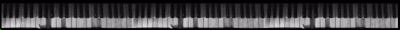

html and design
by Vickie Mapes

Back to Phoenix
1 - Beelzebub is aching in my belly-o.
2 - My feet are heavy and I'm rooted in my wellios.
3 - And I want to get away and go
4 - From all these mirror windows.
5 - I look at eye level, it isn't good enough.
6 - And then I find it out when I take a good look up.
7 - There's a hole in the sky with a big eyeball
8 - Calling me:
9 - "Come up and be a kite,
10 - And fly a diamond night
11 - A diamond kite, a diamond kite.
12 - Ooh, what a diamond!
13 - "A diamond kite
14 - On a diamond flight.
15 - Over the lights, under the moon.
16 - Over the lights, under the moon.
17 - Over the moon, over the moon!"
18 - I feel a rush along my body, like a bullet.
19 - I'm 2-D after a push-and-pull feeling.
20 - And I want to get back to safe home:
21 - Cause I love that dome.
22 - I got no limbs, I'm like a feather on the wind.
23 - Well, I'm not sure if I want to be up here, at all.
24 - And I'd like to be back on the ground,
25 - But I don't know how to get down--down--down!
26 - "Come up and be a kite,
27 - And fly a diamond night
28 - A diamond kite, a diamond kite.
29 - Ooh, what a diamond!
30 - "A diamond kite
31 - On a diamond flight.
32 - Over the lights, oooh, under the moon.
33 - Over the lights, oooh, under the moon.
34 - Over the moon, over the moon!"
- line 21: "I love the homeland dome." (album)
- line 23: no "Well" in the album version.
1 - You came out of the night,
2 - Wearing a mask in white colour.
3 - My eyes were shining
4 - On the wine, and your aura.
5 - All in order, we move into the boudoir,
6 - But too soon the morning has resumed.
7 - I'm hanging on the Old Goose Moon.
8 - You look like an angel,
9 - Sleeping it off at a station.
10 - Were you only passing through?
11 - I'm dying for you just to touch me,
12 - And feel all the energy rushing right up-a-me.
13 - L'amour looks something like you.
14 - The thought of you sends me shivery.
15 - I'm dressed in a lace, sailing down a black reverie.
16 - My heart is thrown
17 - To the pebbles and the boatmen.
18 - All the time I find I'm living in that evening,
19 - With that feeling of sticky love inside.
20 - I'm hanging on the Old Goose Moon.
21 - You look like an angel,
22 - Sleeping it off at a station.
23 - Were you only passing through?
24 - I'm dying for you just to touch me,
25 - And feel all the energy rushing right up-a-me.
26 - L'amour looks something like you.
27 - L'amour looks something like you.
28 - L'amour looks something like you.
- The lyrics are identical to the album version.
1 - Moving stranger,
2 - Does it really matter,
3 - As long as you're not afraid to feel?
4 - Touch me, hold me.
5 - How my open arms ache!
6 - Try to fall for me.
7 - How I'm moved.
8 - How you move me
9 - With your beauty's potency.
10 - You give me life.
11 - Please don't let me go.
12 - You crushed the lily in my soul, soul, soul.
13 - Moving liquid--
14 - Yes, you are just as water.
15 - You flow around all that comes in your way.
16 - Don't think it over,
17 - It always takes you over,
18 - And sets your spirit dancing.
19 - How I'm moved.
20 - How you move me
21 - With your beauty's potency.
22 - You give me life.
23 - Please don't let me go.
24 - Give me life.
25 - Please don't let me go.
26 - Oh, you give me life.
27 - Please don't a let me go.
28 - You crushed the lily in my soul, soul, soul.
- The lyrics are identical to the album version.
1 - You've never driven through a red light,
2 - Or let your mind leave your body.
3 - It's pitch black in bed every night:
4 - You set the clock right for the morning alarm.
5 - You've never wanted to start any fights,
6 - Don't know a thing about tapping in on wires.
7 - I fill the room with people
8 - but still you sit empty,
9 - Stuck like putty.
10 - I tried to teach you good rock'n'roll,
11 - But you couldn't get over the old one-two,
12 - And nevertheless, you'll do.
13 - Nevertheless, you'll do.
14 - Nevertheless, I do.
15 - You're getting up in the morning and put on your
suit [ca. 0'55]
16 - For the office, and leave me.
17 - You come home all pushed and pulled,
18 - At six-thirty in the evening.
19 - The television, it takes you away
20 - To a picture-world where I have no say in it.
21 - I fill the room with people
22 - but still you sit empty,
23 - Stuck like putty.
24 - I tried to teach you good rock'n'roll,
25 - But you couldn't get over the old one-two,
26 - And nevertheless, you'll do.
27 - Nevertheless, you'll do.
28 - Nevertheless, I do.
1 - As the light hits you,
2 - As you shift along the floor,
3 - I find it hard to place my face.
4 - How did I come to be here, anyway?
5 - It's terribly vague, what's been before.
6 - I could have been anyone.
7 - You could have been anyone's dream.
8 - Why did you have to choose our moment?
9 - Why did you have to make me feel that?
10 - Why did you make it so unreal?
11 - Oh! To be in love,
12 - And never get out again.
13 - Oh! To be in love,
14 - And never get out again.
15 - Oh! To be in love,
16 - Never get out again.
17 - All the colours look brighter now.
18 - Everything they say seems to sound new.
19 - Slipping into tomorrow too quick,
20 - Yesterday always too good to forget.
21 - Stop the swing of the pendulum and let us through!
22 - Oh! To be in love,
23 - And never get out again.
24 - Oh! To be in love,
25 - And never get out again.
26 - Oh! To be in love,
27 - Never get out again.
Differences to the album version:
- line 5: "It's terribly vague, what's gone before." (album)
- line 16/27: "And never get out again. " (album)
- line 21: "Stop the swing of the pendulum! Let us through!"
(album)
- in the album version the last chorus is repeated.
1 - Whenever I look out french windows
2 - It's always snowing outside.
3 - And feel your body relax on mine,
4 - Giving me all the good lines,
5 - (Uh-huh)
6 - All the good lines,
7 - All the good lines...
8 - Hot in the ice,
9 - On fire inside,
10 - A snowball.
11 - Ah, but she's wonderful,
12 - Set in the snow.
13 - Ah, but she's wonderful,
14 - Set in the snow.
15 - Hot in the ice,
16 - On fire inside,
17 - A snowball.
18 - Ah, but she's wonderful,
19 - Set in the snow.
20 - Ah, but she's wonderful,
21 - Set in the snow.
22 - A crystal layer of ice on our skin:
23 - Very numb outside but warm within.
24 - I bend to join our lips, but it's too cold
25 - To kiss and hit. Is it you I'm feeling?
26 - Is it you I'm feeling?
27 - (Yeah)
28 - Is it you I'm feeling?
29 - Hot in the ice,
30 - On fire inside,
31 - A snowball.
32 - Ah, but she's wonderful,
33 - Set in the snow.
34 - Ah, but she's wonderful,
35 - Set in the snow.
36 - Hot in the ice,
37 - On fire inside,
38 - A snowball.
39 - Ah, but she's wonderful,
40 - Set in the snow.
41 - Ah, but she's wonderful,
42 - Set in the snow.
The following is probably not from the Phoenix demos tape. Organic Acid belongs to the Piano Demos:
See also "Before the Fall"
IED: This song is radically different from the others in that collection, however, in that it includes a rather long poem by Kate's brother John Carder Bush, who recites a stanza or two between each verse and chorus of Kate's song. (Kate's piano continues between verses as a support to John's recitation.) IED cannot see any really clear connection between Kate's song and John's poem: the former seems to be a kind of lullabye to a troubled lover, and is filled with imagery of the sea. (One possibility, therefore, is that this is the song known as Atlantis, which IED has not heard but which is listed among the songs on the near-mythical album, The Early Years.) John's poem, however, is a far more detailed and explicit descriptive poem which details the progress and violent end of a vaguely perverted love affair. It is possible that the speaker in Kate's song is addressing a character in John's poem, or possibly the narrator of John's poem, himself; but neither of these interpretations seems likely to IED. (On the other hand, the reference to the beach at the climax of John's poem does provide for the possibility that the two are interconnected.) It seems more probable that Kate simply invited John to recite one of his poems during the performance of her song. She must have felt that the two works complemented each other in some intangible way; and IED, for one, agrees with her.
Poetry by John Carder Bush
Music and Lyrics by Kate Bush
John:
1 - "He got her drunk very quickly.
2 - Holding hands, they found the broom-cupboard,
3 - Where he had control as far as the fall,
4 - When his hand covered wet hair.
5 - She took over among furniture wax,
6 - Dust, the cloying yellow of polishing-cloth.
7 - When he was sick, she comforted him."
Kate:
8 - Oh, hush, my friend, and sleep,
9 - And cuddle to the wind.
10 - And sleep on through the waves
11 - That may wet your lover's dream.
12 - We have been far through this night long hours.
13 - We will go far, tomorrow, out of sight, ooh...
John:
14 - "He couldn't do it properly;
15 - The disco, the office, the pub,
16 - Had left out those details of delight.
17 - Satisfied, he would collapse out,
18 - Puzzled at why she still squirmed,
19 - Held onto him, tears curling into her mouth.
20 - This was something their stories always omitted:
21 - That her joy would seem like pain,
22 - When he focused after his release."
Kate:
23 - Do sand and shells and stones
24 - Peep in through your night?
25 - But you should not be hurt
26 - For all will pass with time.
27 - We have been far through this night long hours.
28 - We will go far, tomorrow, out of sight, ooh...
John:
29 - "In the third week of the relationship
30 - She was tripping on organic acid,
31 - Would stop to pick up a rained-out leaf,
32 - Would give it tenderly into his hand--
33 - Full of dead things before they reached the car.
34 - When they drove she sat with mouth open
35 - As though photographed on the impact of a stomach punch,
36 - Her right fist gripping the skin of his left leg.
37 - Hooking the steering-wheel closer to his heart,
38 - He feared her, and slapped out sideways into her face.
39 - She entered the cut with her tongue,
40 - Gurgling gratitude for the strange taste."
Kate:
41 - Do you fear the dark?
42 - Then hush, and realise
43 - That though the angels never come,
44 - Prayers can soothe your mind.
45 - We have been far through this night long hour.
46 - We will go far, tomorrow, out of sight, ooh...
John:
47 - "There was no premonition of the wet Hog's back.
48 - The sportscar slumped, snout into a beech,
49 - Their corpses giving the vehicle arms,
50 - Petrol and blood at last dripping together.
51 - But quick flashes of a planned lunch:
52 - Cold red beef, white cloth by a cherrywood fire,
53 - Game pie, and for him two pints of colder beer,
54 - The winter air tucking under their eyelids
55 - As they spun on the gravel at Clandon;
56 - Their hands steaming from quick moisture,
57 - The aromatic finger drawn up to his nostril--
58 - Dazed after mutual masturbation,
59 - They zigzagged into a conservative end."
Kate:
60 - Oh hush, my friend, and sleep...
- line 35: difficult to hear, "stomach punch" added from "Before the Fall".
1 - There's beauty in such a sacred structure, oh,
2 - That thing that is nurtured and loved.
3 - It's quite an occasion.
4 - It's driving me crazy.
5 - I'm not allowed to touch on lust,
6 - I've gotta get a hold of myself.
7 - I mustn't admit it.
8 - I don't see why I shouldn't,
9 - I don't see why I shouldn't,
10 - I don't see why I shouldn't
11 - Pick the rare flower.
12 - I don't see why I shouldn't,
13 - Well, I don't see why I shouldn't,
14 - I don't see why I shouldn't
15 - Pick the rare flower.
16 - Whoooo
17 - Walking, in a Paradise or Eden,
18 - Whoa, temptation:
19 - Give me one second to succumb.
20 - It's calling me.
21 - With a menacing whisper [ca. 1'46]
22 - Magic offer a-charming me
23 - Why I've gotta get a hold of myself,
24 - You see, but it ain't easy.
25 - I don't see why I shouldn't,
26 - I don't see why I shouldn't,
27 - I don't see why I shouldn't
28 - Pick the rare flower.
29 - I don't see why I shouldn't,
30 - I don't see why I shouldn't,
31 - I don't see why I shouldn't
32 - Pick the rare flower.
33 - Ooooooh.
- line 7: uncertain: "I mustn- de dedn de deh."
- line 21/22: uncertain, maybe "Magical world enchanting me."
or "Magic of hurt enchanting me."
- line 23: Maybe "Well" instead of "Why".
(Note: The spelling of "Rinfy" is confirmed by the DJ, who spells it during the Phoenix broadcast. The wrong title "In My Lovers Room" comes from a mishearing of "oooh" for "room".)
1 - I fell in love with Rinfy the gypsy.
2 - He said when I grew up he'd marry me,
3 - Carry me away on his steed.
4 - "Don't worry, my baby!
5 - Don't die, my funny little darling!
6 - I'm going away for a little while,
7 - And shouldn't be gone for very long."
8 - Ooh, then I really fell for Geoffrey, our gardener.
9 - He said he'd marry me, too.
10 - Oh, and I believed him, just like a fool.
11 - "Don't worry, my honey!
12 - Don't die, my funny little doll!
13 - I'm going away for a little while.
14 - Shouldn't be gone for very long."
15 - (Ooh, long, long, long...)
16 - Playing canasta in c-cold rooms,
17 - Playing canasta in cold rooms,
18 - Playing canasta upstairs, downstairs,
19 - And in my lover's...ooh...
20 - I met a boy who took me upstairs,
21 - Then took me in his arms and told me
22 - I comforted him, uh-huh.
23 - "Don't worry, my dear,
24 - Don't cry, you weird little stranger. [ca. 2'29]
25 - I'm going away.
26 - You probably won't ever see me again."
27 - Oh, yes, I know, I'm always falling,
28 - Gazing at hazy goldfish in your swimming eyes.
29 - How could I not lie there with you?
30 - "Don't worry, my darling!
31 - Don't die, my silly little baby!
32 - I'm going away for a little while,
33 - And shouldn't be gone for very long."
34 - (Ooh, long, long, long!)
35 - Playing canasta in c-cold rooms,
36 - Playing canasta in cold rooms,
37 - Playing canasta upstairs, downstairs,
38 - And in my lover's...ooh...
- line 15: This might be: "Oh, long, long, long t(ime)..."
- line 24: "weird little", this sounds like "weirdo"
to the untrained ear, but it's weird little" (north Kent accent). I
can hear it now, Bryan!
1 - Here in the studio,
2 - As they're turning down the lights,
3 - I lick my lips to start the first line--
4 - How can this girl be me?
5 - "Oh, little thing, are you looking lost?"
6 - The vertigo, the need to lose.
7 - Ooh, ooh...
8 - They try to trip me up and tapes begin to spin. [ca. 0'35]
9 - I feel a little sick and hope my notes are in.
10 - I try to put it all in, do it for you.
11 - Don't even know you but I need you to love me, too.
12 - They try to trip me up and tapes begin to spin. [ca.
0'50]
13 - I feel a little sick and hope my notes are in.
14 - I try to put it all in, do it for you.
15 - Don't even know you but I need you to love me, too.
16 - Scares me silly, but it gets me going, [ca 1'05]
17 - Like a Romeo.
18 - Scares me silly, but it gets me going,
19 - Like a Romeo.
20 - Scares me silly, but it gets me going.
21 - Swimming amid the cans, [ca. 1'39]
22 - I wonder can I goad myself into another take,
23 - And keep the mood?
24 - It's like a film - such balance. [ca. 1'48]
25 - I close my eyes to the cello solo, and ache.
26 - The music will never let me blow away - you-oo
27 - You know the feeling when you're on the right track.
[ca. 2'02]
28 - You fall in love and you're never gonna turn it back.
29 - It's recording you, they're so sensitive.
30 - Oozing without me, spilling over with secrets.
31 - You know the feeling when you're on the right track.
[ca. 2'16]
32 - You fall in love and you're never gonna turn it back.
33 - It's recording you, they're so sensitive.
34 - Oozing without me, spilling over with secrets.
35 - Scares me silly, but it gets me going, [ca. 2'31]
36 - Like a Romeo.
37 - Scares me silly, but it gets me going,
38 - Like a Romeo.
39 - Scares me silly, but it gets me going.
This is the hardest lyrics-nut to crack! What a wishy-washy!
- line 10/14: "I try to put it all into it for you."
- line 21: "Singing" or "Swinging"
- line 24: uncertain
- line 25/26: "..and ache. The.." uncertain. Also
puctuation, lineage uncertain. Sounds like "an-eightnic", maybe
an adjective? " - you-oo" at the end uncertain, possibly just a "yoohoo".
- line 29/33: uncertain
- line 30/34: Complete mystery.